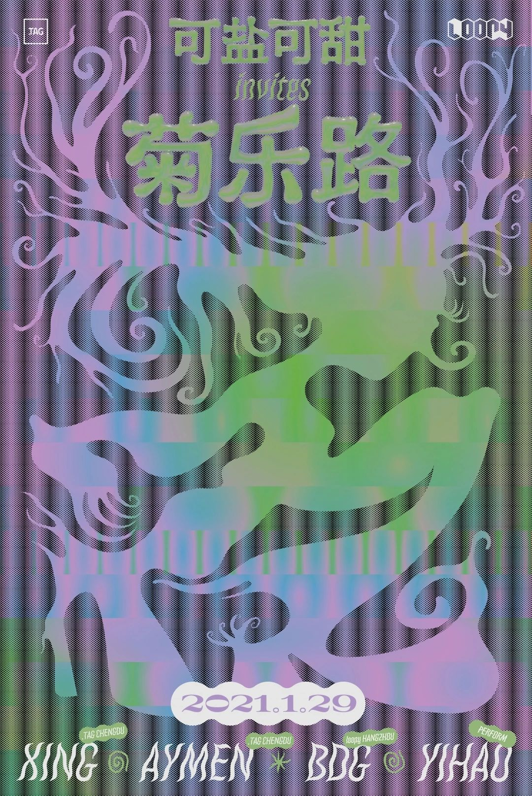
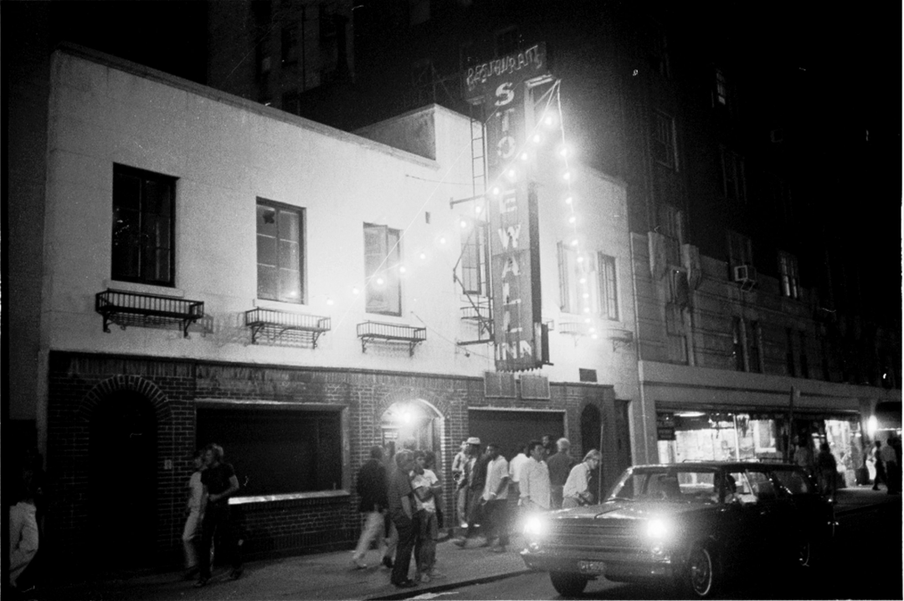
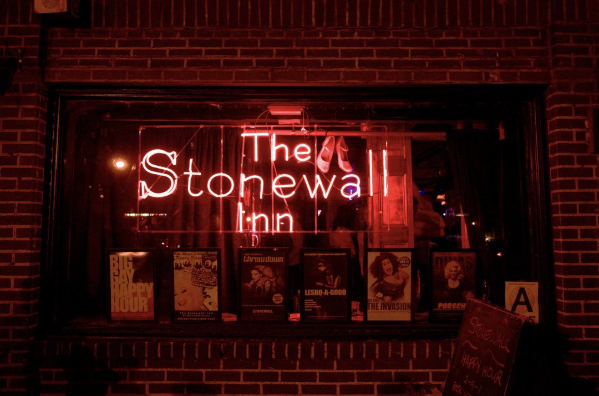
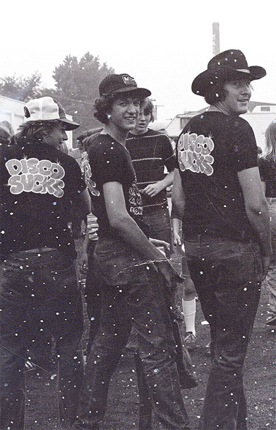
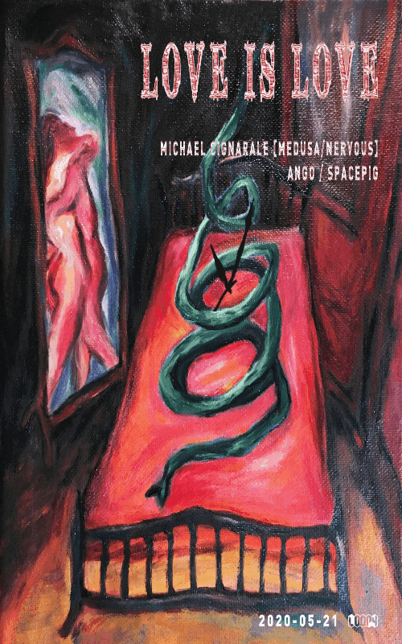
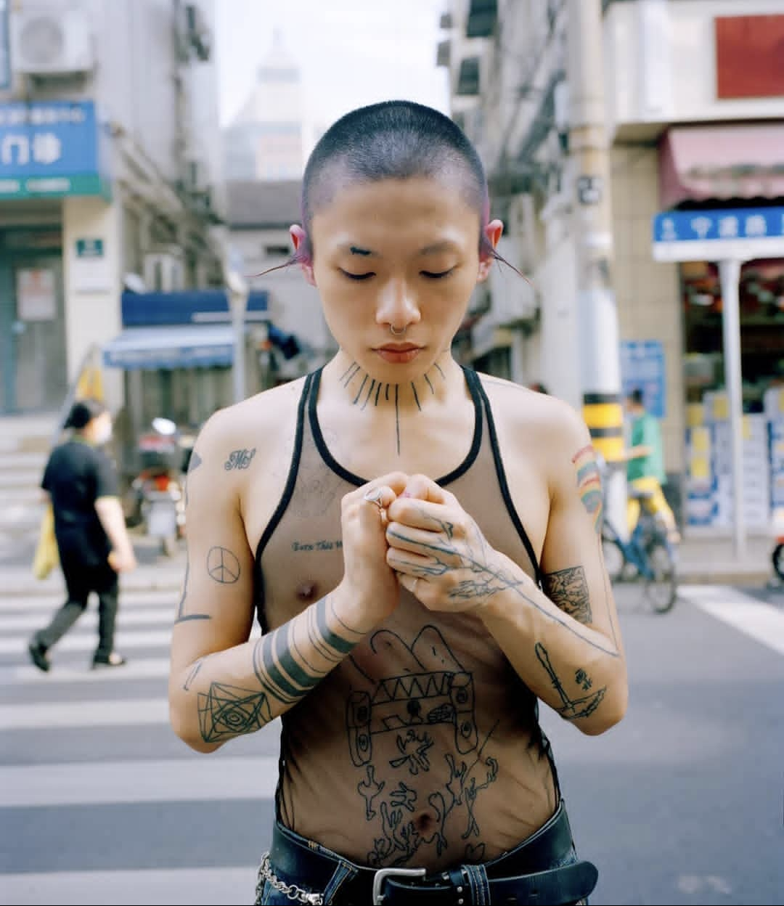
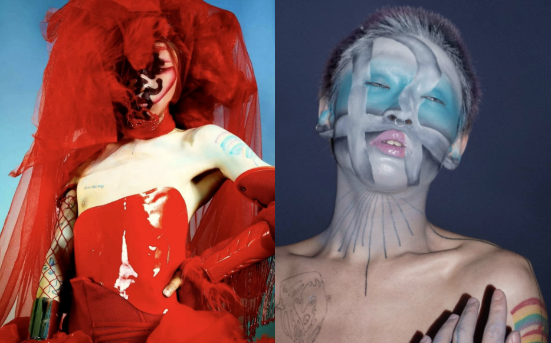
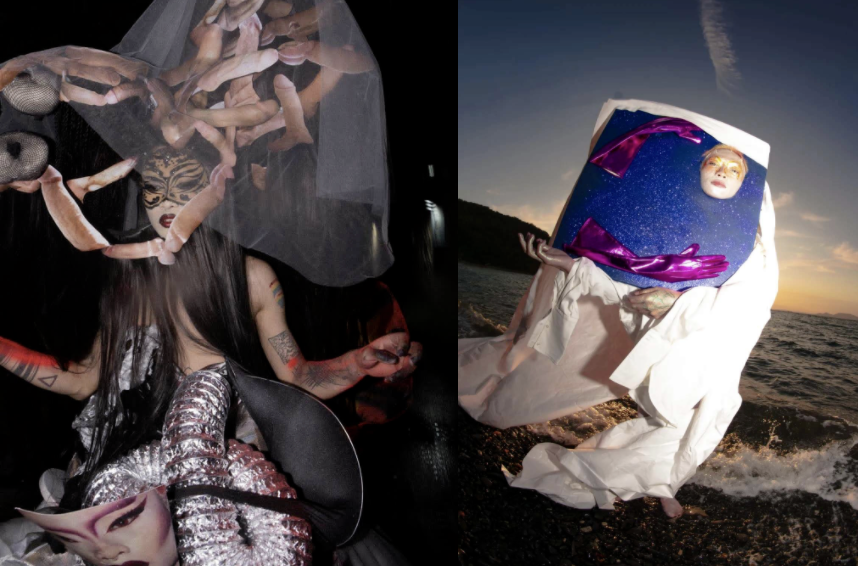
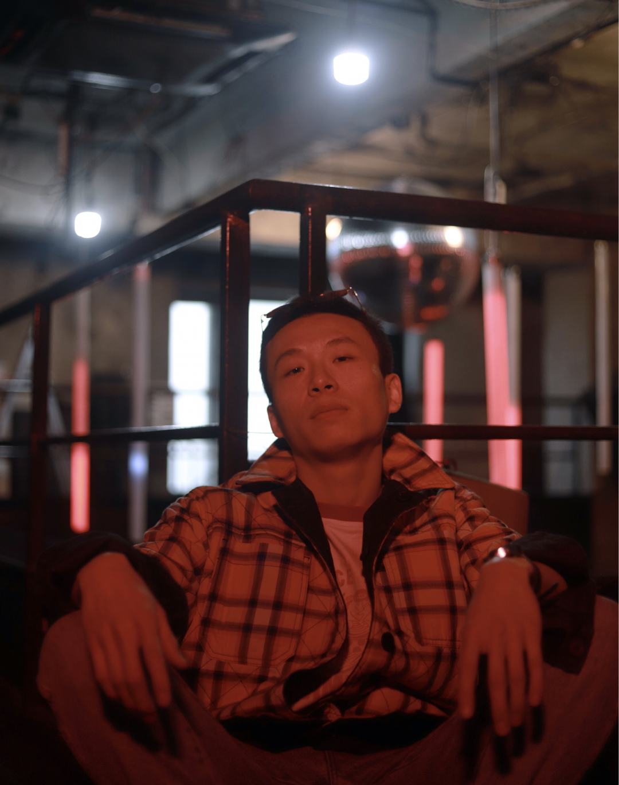
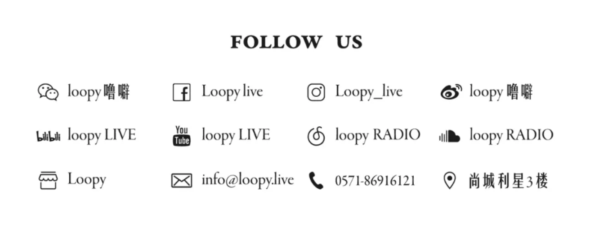

1.29周五｜可盐可甜 INVITES菊乐路

异性恋正统主义 (Heteronormativity) 把异性恋的模式与关系视为理所应当的社会规范，在妇女研究学者Stevi Jackson眼中，这是将性别二元划分的表征。死板、僵硬的二元划分深刻的影响着社会，很多场合下，将性别视为光谱、反抗性别二元论的人们无法得到认可，往往受到强烈的排斥。
1969年，纽约市唯一允许同性跳舞的地方是一家被黑手党操纵的石墙酒吧，酒吧的管理者通过行贿警察避免频繁的突袭。最贫穷和最边缘化的人群——有阳刚气质的女同性恋、有阴柔气质的男同性恋、变装皇后、男妓、跨性别者——聚集在这里。6月28号，警察在临检过程中与早已压抑着不满的人群发生了激烈的冲突。之后的一个星期，人群在酒吧附近聚集，向路人派发传单，上面写着"Get the Mafia and cops out of gay bars! ".这是美国历史上性少数群体首次反抗政府的迫害，被称为石墙暴动。
当年的石墙酒吧

如今的石墙酒吧
已经成为一个极有纪念意义的地点
石墙暴动启发了性少数权利运动，大大小小的性少数组织逐渐建立起来。旧金山的八位女性在私人公寓客厅聚会，成立了Daughters of Bilitis，她们最初的诉求是创造一个安全的跳舞场所。Loft party应运而生，在70年代初期发扬光大，正如David Mancuso在曼哈顿下东区的公寓中举办的私人派对。这些派对包容了不同性取向、性别表达、种族、阶层的人们，孕育着Disco这一新发明的混血、酷儿属性。
Disco的广泛流行是反主流文化运动的延宕，当迪斯科舞厅（Discotheque）开始迎合这种声音的时候，昭示着地上夜生活中Disco的极大的影响力。七十年代末期，随着“Disco sucks”的口号出现，Disco成为过时的符号，拆解成house/garage继续发展。同时，地下电子音乐场景逐渐被白人、直男、中产阶级群体占领，创造了舞池的酷儿社群逐渐成为舞池的点缀。
这句话是个下流的隐喻
Frankie knuckles - House
Larry Levan - Garage


这一次，充满爱和包容的彩虹桥将连接杭州Loopy俱乐部的可盐可甜和.TAG成都的为彩虹文化勇敢发声的菊乐路派对。届时.TAG俱乐部的两位驻场，同时也是密切参与菊乐路派对的活跃力量 XING和Aymen会与loopy杭州本地DJ BDG 通过音乐连接更多酷儿社群伙伴，同时鼓励人们勇敢表达自己。
菊乐路往期回顾图片
可盐可甜往期海报
“这一次联合派对我们请到YIHAO用变装表演放肆表达ta对性别气质表达的思考”

Yihao // Yihao是一位千禧后变装表演者。近年来一直以变装为媒介，从事针对人文价值观，社会身份，多元性别，即兴戏剧，时事政治等题材为中心思考的实验性演出。或许当下呈现给观众的现场形式大过类容，但自发性相较主动，不追求流行文化为中心的主义，所呈现既所生活，是我生活意志的体现。


在尽力避免成为追逐西方语境主导的变装表演者的路上，我踏出了第一步。没有所谓平权、没有群体类别、没政治倾向，只站在以人本位的立场上去变装、去感受、去宣言、这是我的中心思想。

> 可盐可甜 & 菊乐路限定福利 <
✨✨在本条推文底下转发+留言, 我们将在1月29日下午14:00前挑选两名送出loopy + .TAG限定大礼包各一份！
🌈🌈
Time: 22:30, 1月29日, 周五 / Friday, 29th, Jan.
Artist / DJs: Xing / Aymen / BDG / Yihao (Performance)
Genres: Electro / House / Techno
Tickets: 100RMB(现场Doors)
